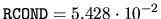
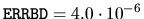
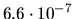
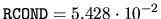
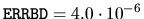
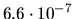

The linear least squares problem is to find x that minimizes
 .
We discuss error bounds for the most common case where A is m-by-n
with m > n, and A has full rank;
this is called an overdetermined least squares problem
(the following code fragments deal with m=n as well).
.
We discuss error bounds for the most common case where A is m-by-n
with m > n, and A has full rank;
this is called an overdetermined least squares problem
(the following code fragments deal with m=n as well).
Let  be the solution computed by one of the driver routines
xGELS, xGELSX, xGELSY, xGELSS, or xGELSD (see section 2.3.2).
An approximate error
bound4.10
be the solution computed by one of the driver routines
xGELS, xGELSX, xGELSY, xGELSS, or xGELSD (see section 2.3.2).
An approximate error
bound4.10
EPSMCH = SLAMCH( 'E' )
* Get the 2-norm of the right hand side B
BNORM = SNRM2( M, B, 1 )
* Solve the least squares problem; the solution X overwrites B
CALL SGELS( 'N', M, N, 1, A, LDA, B, LDB, WORK, LWORK, INFO )
IF ( MIN(M,N) .GT. 0 ) THEN
* Get the 2-norm of the residual A*X-B
RNORM = SNRM2( M-N, B( N+1 ), 1 )
* Get the reciprocal condition number RCOND of A
CALL STRCON('I', 'U', 'N', N, A, LDA, RCOND, WORK, IWORK, INFO)
RCOND = MAX( RCOND, EPSMCH )
IF ( BNORM .GT. 0.0 ) THEN
SINT = RNORM / BNORM
ELSE
SINT = 0.0
ENDIF
COST = MAX( SQRT( (1.0E0 - SINT)*(1.0E0 + SINT) ), EPSMCH )
TANT = SINT / COST
ERRBD = EPSMCH*( 2.0E0/(RCOND*COST) + TANT / RCOND**2 )
ENDIF
For example4.11,
if
 ,
,
EPSMCH = SLAMCH( 'E' )
* Get the 2-norm of the right hand side B
BNORM = SNRM2( M, B, 1 )
* Solve the least squares problem; the solution X overwrites B
RCND = 0
CALL SGELSX( M, N, 1, A, LDA, B, LDB, JPVT, RCND, RANK, WORK,
$ INFO )
IF ( RANK.LT.N ) THEN
PRINT *,'Matrix less than full rank'
ELSE IF ( MIN( M,N ) .GT. 0 ) THEN
* Get the 2-norm of the residual A*X-B
RNORM = SNRM2( M-N, B( N+1 ), 1 )
* Get the reciprocal condition number RCOND of A
CALL STRCON('I', 'U', 'N', N, A, LDA, RCOND, WORK, IWORK, INFO)
RCOND = MAX( RCOND, EPSMCH )
IF ( BNORM .GT. 0.0 ) THEN
SINT = RNORM / BNORM
ELSE
SINT = 0.0
ENDIF
COST = MAX( SQRT( (1.0E0 - SINT)*(1.0E0 + SINT) ), EPSMCH )
TANT = SINT / COST
ERRBD = EPSMCH*( 2.0E0/(RCOND*COST) + TANT / RCOND**2 )
END IF
The numerical results of this code fragment on the above A and b are
the same as for the first code fragment.
CALL SGELSD( M, N, 1, A, LDA, B, LDB, S, RCND, RANK, WORK, LWORK,
$ IWORK, INFO )
and the call to STRCON must be replaced by:
RCOND = S( N ) / S( 1 )
Applied to the same A and b as above, the computed  is
nearly the same,
,
,
and the true error is
.
is
nearly the same,
,
,
and the true error is
.